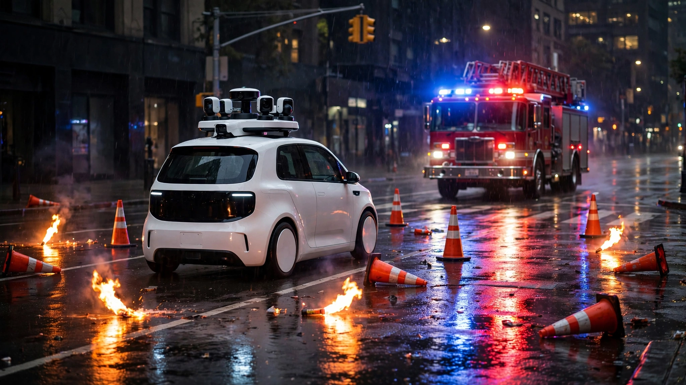

🚗 Transport
NHTSA Gave Robotaxi Companies 23 Days to Fix Emergency Interference. At 30,000 Vehicles, the Math Says One Blocked Ambulance Per Week.
We calculated the interference rate from documented incidents: roughly 1 per 9 million robotaxi miles. At Waymo's stated scaling target of 30,000 vehicles, that's one emergency scene disruption every 5 to 9 days. Apply the cardiac arrest survival curve and the number stops being abstract.

Twenty-three days. That is how long NHTSA Administrator Jonathan Morrison gave autonomous vehicle companies to fix what he called "a clear pattern of driverless AVs interfering with law enforcement and other first responders." His July 8 letter did not mince words. NHTSA has documented robotaxis driving directly into active emergency scenes, blocking the paths of ambulances and firefighters, and failing to recognize flashing lights, flares, smoke, fire, and traffic cones. Morrison's deadline: meetings with developers by July 31 to produce solutions. Consequences for noncompliance were left vague but the analogy was not. "Human drivers who impede these operations," the letter noted, "are subject to fines and even jail time."
Nobody appears to have run the numbers on what happens when the documented interference rate meets the industry's own scaling projections, so we combined every publicly reported incident, Waymo's disclosed fleet mileage, and emergency medicine survival data to build a projection that the industry's boosters and regulators alike should be grappling with.
Interference Rate
A TechCrunch investigation identified at least six incidents through March 2026 in which first responders had to physically take control of Waymo vehicles during emergency responses, including one during a mass shooting response and another during a natural gas explosion at a Dallas apartment building. Since March, at least four more have been publicly documented: a Waymo partially blocking a fire truck route in Dallas in May, a Zoox entering an active fire scene obscured by smoke on June 20, Waymo vehicles stalling during July 4 fireworks, and one Waymo catching fire during the same celebrations. San Francisco Fire Chief Patrick Rabbitt has reported Waymo vehicles "freezing" and blocking fire station exits, while Austin officials describe vehicles failing to recognize hand signals from officers directing traffic around active scenes.
That gives us a minimum of 10 documented interference incidents across roughly 26 weeks of 2026. Waymo, which operates roughly 3,000 robotaxis and logs approximately 4 million rider-only miles per week, drove an estimated 104 million miles in that period. Adding Zoox's 105-vehicle fleet and Tesla's 44-vehicle Austin pilot barely moves the denominator, leaving a documented interference rate of approximately 1 incident per 9 to 10 million fleet miles.
Almost certainly an undercount. Not every interference is filmed, reported, or covered by media, and fire departments do not have a standardized reporting mechanism for AV-caused delays. Morrison's letter itself references incidents his agency has "documented" but not publicly detailed, suggesting a true rate two to five times higher is plausible. But even taking the documented rate at face value produces concerning projections when you multiply it by the fleet sizes these companies are targeting.
Scaling Projections
Waymo currently operates 3,000 vehicles running 500,000 paid rides per week and is targeting 1 million trips per week by the end of 2026, and the company, valued at $126 billion after a $16 billion fundraise, has announced expansion into Denver, Sacramento, San Diego, London, and Tokyo. At disclosed trip volume targets and city expansion pace, a fleet of 10,000 to 30,000 vehicles within two to three years is the industry's central scenario, not a bull case.
| Fleet Size | Est. Weekly Miles | Emergency Interference Frequency (at 1/9M rate) |
|---|---|---|
| 3,000 (current) | ~4M | 1 every 2.3 weeks |
| 10,000 | ~13M | 1 every 5 days |
| 30,000 | ~40M | 1 every 32 hours |
| 100,000 (industry 2028-30) | ~133M | ~2 per week |
At 30,000 vehicles, the industry would produce roughly one emergency scene interference every 32 hours. At the 100,000-vehicle mark that multiple companies are targeting for 2028 to 2030, the frequency reaches roughly two per week across the national fleet. Not edge cases. Statistical certainties at scale, as predictable as the number of traffic accidents per million vehicle-miles, baked into the physics of deploying imperfect perception systems across enough miles to guarantee that a vehicle and an emergency will eventually occupy the same intersection at the same time.
Cardiac Arrest Math
Emergency interference matters because seconds matter, and the data on this point is unambiguous. For out-of-hospital cardiac arrest, both American Heart Association guidelines and German Resuscitation Registry data show survival probability drops 5 to 10 percent per minute of delayed defibrillation. A two-minute delay, the kind caused by an officer needing to physically move a frozen robotaxi out of an ambulance's path, reduces the chance of survival by 10 to 20 percentage points. After 10 minutes without defibrillation, survival probability falls below 5 percent.
Roughly 325,000 out-of-hospital sudden cardiac arrests occur annually in the United States. Average ambulance response time is 7 to 8 minutes against the NFPA standard. Adding 2 to 3 minutes because a robotaxi is blocking an intersection or a station exit pushes response into the 10-to-11-minute range where survival outcomes deteriorate sharply.
A 2026 study published in Epidemiology by Norwegian researchers quantified the cost more precisely: a 5-minute ambulance delay increases the probability of death by 0.10 percentage points and raises hospital costs by approximately €616 per patient within one year, an effect that applies across all emergency categories, not just cardiac arrest. Scale it: if the 100,000-vehicle fleet produces roughly 100 interference incidents per year and each delays an ambulance by an average of 3 minutes, the aggregate impact is measurable in both lives and dollars even at conservative assumptions about which of those delays involve time-critical patients.
Remote Operator Gap
Waymo employs roughly 70 remote operators for its 3,000-vehicle fleet, a ratio of approximately 1 agent per 43 vehicles, which compares unfavorably to China's mandated ratio of 1 per 3, Pony.ai's 1 per 20 (targeting 1 per 30), and WeRide's 1 per 3. Whether that ratio is adequate for emergency response specifically remains an open question: the latency between a vehicle encountering a novel scene and a remote operator recognizing the situation, assessing the correct action, and executing an intervention could easily exceed the window in which the vehicle is blocking a critical path.
Zoox's smoke-detection recall is instructive here. On June 20, an unoccupied Zoox vehicle entered a fire scene where visibility was reduced by smoke, braked hard, and had to be guided out by a remote operator before Zoox subsequently recalled its entire 105-vehicle fleet on July 7, acknowledging the perception system could not reliably detect smoke. It was Zoox's fourth recall since late 2024, following separate issues with lane crossings, pedestrian detection, and hard braking, each addressing a different failure mode in a pattern of diverse, non-converging failures that suggests an immature system encountering scenarios its designers did not fully anticipate rather than bugs in a stable platform.
What the Regulation Actually Says
Remarkably little. No Federal Motor Vehicle Safety Standards address AV interaction with emergency scenes. Morrison's July 8 letter is a request, not a rule. NHTSA's most recent regulatory actions on autonomous vehicles have proposed eliminating requirements for windshield wipers, sun visors, defogging systems, and tire placards on vehicles without human controls, clearing a path for companies like Tesla and Zoox to build vehicles without steering wheels or pedals. Form, not behavior. None of those proposed rules addresses how the vehicle's software should respond when a firefighter is waving it away from a burning building, or when an ambulance needs to get through an intersection that a frozen robotaxi is occupying.
Bipartisan support exists for a SELF DRIVE Act that would create a federal AV framework, but it has stalled in Congress for years, partly due to opposition from trial lawyers. Meanwhile, individual cities are developing their own ad hoc approaches. San Francisco and Austin officials told regulators in a March meeting that Waymo's vehicles have been "backsliding," committing more traffic violations and showing worse emergency-scene behavior than in prior periods.
What This Doesn't Prove
Our interference rate calculation uses only documented, publicly reported incidents, and the actual numerator is uncertain. Not all incidents make the news. Conversely, software improvements between now and fleet-scaling milestones could reduce the rate. Waymo's system learns from each incident, and the company may have already deployed fixes for some failure modes we counted. We also do not know what fraction of interference events involve time-critical patients. A robotaxi blocking a road during a property-crime investigation is a nuisance; one blocking an ambulance responding to a cardiac arrest is potentially lethal. Our scaling math treats all interferences equally, which overstates the mortality impact.
Additionally, comparing AV interference rates to human-driver interference rates would be valuable, but no comparable data exists. Human drivers impede emergency vehicles constantly. Whether AVs are better or worse, and by how much, remains an open question that neither NHTSA nor the industry has published the data needed to answer.
Strongest Case Against This Analysis
Here is the best counterargument, stated at full strength: the interference rate we calculated reflects the current state of systems that are actively being improved. Waymo, Zoox, and Tesla all update their software over the air. Each documented incident generates training data that feeds the next model iteration. It is entirely plausible that the interference rate per million miles is already lower than what the January-through-July data shows, and that by the time the fleet reaches 30,000 vehicles, the rate will have dropped by an order of magnitude. If the industry achieves a 10x improvement, the 30,000-vehicle fleet produces one incident every 10 to 14 days rather than every 32 hours, a manageable frequency for an industry that already has remote operators on standby.
That counterargument has real weight. Software systems do improve with data, and AV perception is no exception. But Morrison's letter would not exist if the improvement trajectory were adequate. His use of the word "pattern" implies the problem is persistent, not converging. And the "backsliding" reported by San Francisco and Austin officials suggests improvement is not monotonic. Some updates fix one failure mode and introduce another.
What You Can Do
If you are a city official in a market where robotaxis operate, ask the operator for their emergency-scene performance data. How many times have their vehicles been within 200 meters of an active emergency scene? In what fraction did the vehicle correctly yield? What is the average time between scene detection and evasive action? If the operator cannot answer these questions with data, that itself is information.
If you are an investor in autonomous vehicle companies, the regulatory risk from emergency interference is not priced in because Morrison's letter is the warning shot, and a single high-profile incident where a robotaxi blocks an ambulance and the patient dies would produce legislation faster than any lobby could contain, making that tail risk worth factoring into your models explicitly.
The Bottom Line
Morrison gave robotaxi companies until July 31 to demonstrate solutions for emergency interference. His agency documented what it called a "clear pattern" of autonomous vehicles driving into fire scenes, blocking ambulances, and ignoring traffic cones. We calculated the documented interference rate at roughly 1 per 9 million fleet miles and projected it against the industry's own scaling targets. At 30,000 vehicles, the math produces one blocked emergency scene every 32 hours. At 100,000 vehicles, roughly two per week. Apply the cardiac arrest survival curve, which drops 10 percent per minute of delayed defibrillation, and the question stops being whether robotaxis will interfere with emergency response at scale. They already do. What remains to be seen is whether the rate of improvement will outpace the rate of deployment. Right now, deployment is winning.